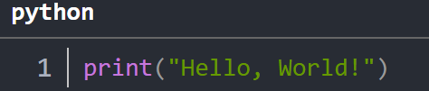

数字经济与数据科学讲义¶
人是由碳水化合物构成的复杂结构体，是以碳元素为核心。计算机是由半导体（PN节）为基础架构而成，以硅元素为核心。人是碳基生物，随着人工智能（AI）不断发展，计算机也可以看作硅基生物，芯片是大脑，通信协议是神经元，计算机语言则是交流工具。这两类“生物”目前是和谐共生的，是碳基生物以绝对的优势，通过制造、创新、组合、升级、迭代，不断促进硅基生物的能力提升和价值创造。在元素周期表中，还没有哪一个元素，能够像硅元素一样，如此接近碳元素的统治。
即使有时候人类会惊诧于计算机“聪明”，仍然不会对两种“生物”的冲突过于担心。即使目前基于自然语言大模型和基于强化学习的Agent已经强力介入人类生活，基于硅基的“社区环境”仍然是单薄和脆弱的，这种“社区环境”仍然是由人类控制与协调。短期来看，硅基生物可以调皮，但不会造反。人类依然会不断投入资源和精力，鞭策硅基生物沿着摩尔定律方向狂奔。
计算机语言本质上是“两种生物”交流工具，人们利用计算机语言，不断扩充对世界的理解和操控，在每一个生产、生活角落都需要深刻理解和灵活运用。因此，对这些内容做一些规整与小结。
本站概述¶
数据科学工具- 以Python为语言基础的数据分析工具箱概率统计分析- 以Python为工具的统计学基础、一元分析与多元分析方法。计量经济学方法- 对计量经济学使用Python语言进行重构。机器学习与概率机器学习- 基于SK-learn,Tensorflow,Keras,Torch的机器学习建模。人工智能训练与部署- 深度学习、强化学习与大模型的部署与应用专题高等数学形象化- 使用Python对微积分、线性代数、微分方程等进行具象化重述。量化金融理论与实践- 财务、金融、交易数据量化处理方法与机器学习原理。课程材料- 本科教学过程资料：课堂练习与程序详解。
样例说明¶
本站的基础文档使用Markdown、Jupyter Notebook完成，使用MKdocs形成本站。本站代码无法在目前环境下直接执行，但可以通过两种方式解决。
- 使用直接复制方法，粘贴到Jupyter Notebook中的单元格中，即可直接执行。
- 登录我的Github仓库，可以在相应的仓库中找到文件包，使用git 或者直接使用Zip压缩包下载本地。
本站中的代码以如下方式显示¶
本站代码多是以下面形式展示：
import pandas as pd
# 构建列联表
data = {
'A': [10, 20, 30],
'B': [40, 50, 60],
'C': [70, 80, 90]
}
df = pd.DataFrame(data, index=['X1', 'X2', 'X3'])
print("列联表:")
print(df)
本站公式是基于\(LaTeX\)编写¶
\[
\begin{align}
f(x) &= \int_{-\infty}^{\infty} e^{-x^2} \, dx \\
&= \sqrt{\pi}
\end{align}
\]
\[\sin^2 x + \cos^2 x = 1\]
你可以使用鼠标右键选择合适的格式复制到文本文件中。
其他部分文档引用格式如下¶
mkdocs.yml # The configuration file.
docs/
index.md # The documentation homepage.
... # Other markdown pages, images and other files.
图片格式展示如下¶

关于我¶
大学教师，理论经济学博士（BNU）、应用经济学博士后(CASS)。研究方向：数字经济、空间经济、企业经济。